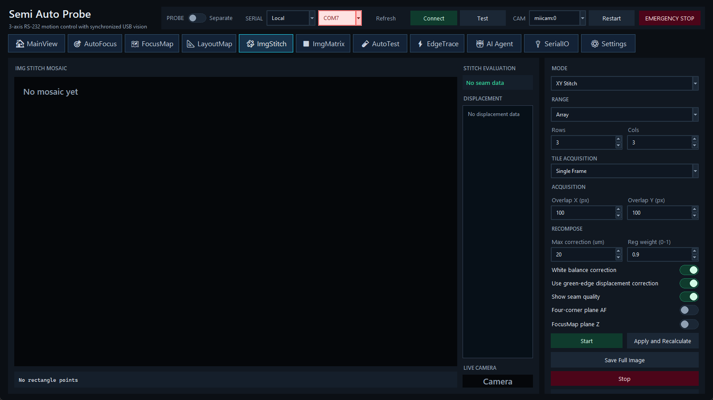

按当前区域采集 XY tile、T-stack 或 Z-stack，并重组成完整显微图像。

XY 区域可使用 Array/Space 参数或 Two Points。先用当前 XY 记录角点，核对行列、step、overlap、扫描顺序和预估 tile 数，再开始运动。
每个 tile 可为 Single、T 或 Z 采集。T/Z 参数控制帧数、间隔、步长及合成方式。使用四角 AutoFocus 或 FocusMap plane 时，先保证对应数据有效；FocusMap 外推区域应单独验证。
重组设置可控制 background correction、tile balance、crop、grid/质量叠加、估计位移和 Focus plane 使用。单击 Apply and Recalculate 只重新处理已有 tile，不重新采集；质量与位移视图用于检查接缝、重复纹理与失败 tile。
XY Stitch Stop 保留已采 tile/session，通常尝试回原 XYZ；Z-stack Stop 不执行原 Z 返回。任何停止后都应核对位置读回和探针间隙。
imgstitch_session/。需要保留的旧 tile、stack 或 session metadata 应在下一次新会话前复制或用 Save Full Image 导出。常见文件包括 tiles/tile_rNNN_cNNN.png、session.json、recomposed_imgstitch.png、stack_result.png、raw_stack/ 和 last_imgstitch.png。AI Agent 的 single capture 使用独立、带时间戳的文件名，不再清空现有拼接会话。